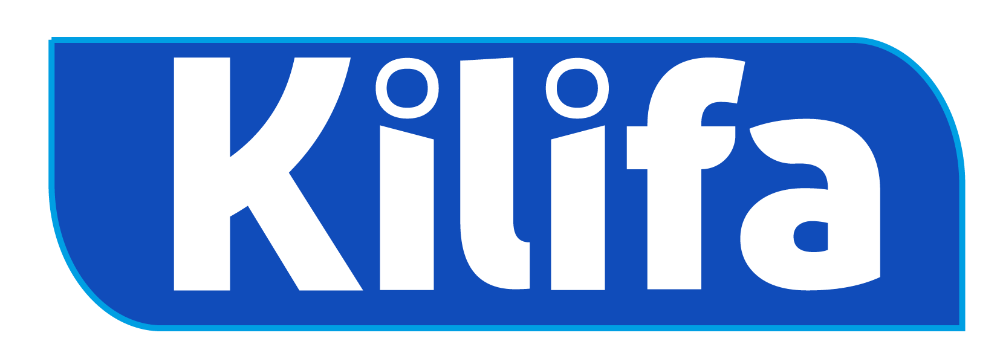
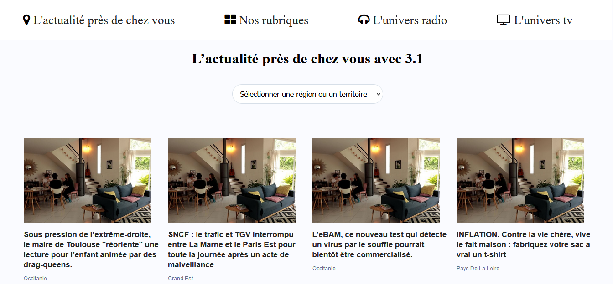
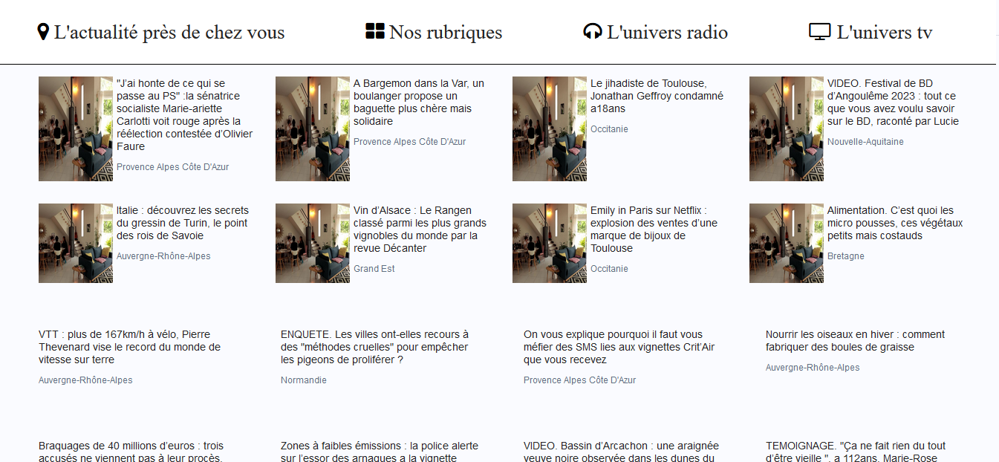
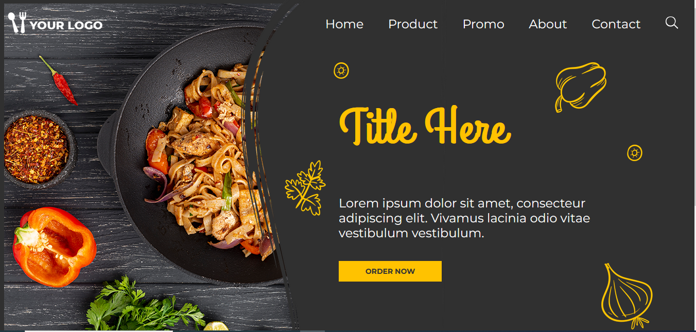

J'ai effectué un stage de cinq semaines, du 24 avril au 26 mai 2023, chez KILIFA CONSULTING, une entreprise spécialisée dans la conception de solutions numériques innovantes. Ce stage m'a permis de mettre en pratique mes compétences en développement web et de participer à des projets concrets.
Présentation de l'entreprise
Date de création :5 décembre 2022 (2 ans d'activité)
Forme juridique :SAS (Société par Actions Simplifiée)
Domaine d'activité :Programmation informatique
Siège social :105 Chemin de Ronde, 78290 Croissy-sur-Seine, France

Projet 1 : Clone de France Info
Au cours de ce stage de développement web, j'ai eu l'opportunité de participer à un projet
ambitieux de création d'un site web clone de France Info. Ce projet a été mené en utilisant la
méthodologie Scrum, une approche agile qui favorise la collaboration et l'efficacité au sein
de l'équipe de développement.
Le projet était divisé en 30 items distincts, chacun représentant une fonctionnalité ou une
page spécifique du site. Chaque membre de l'équipe était responsable d'un ou plusieurs
items et travaillait de manière autonome jusqu'à l'aboutissement de celui-ci. Cette approche
m'a permis de développer mes compétences en gestion de projet et de mieux comprendre
le cycle de vie d'un projet web, de la conception à la mise en production.
J'ai eu l'opportunité de réaliser le 14ème item du projet, consistant en la conception et le
développement d'une fonctionnalité spécifique du site en utilisant HTML, CSS et JavaScript.
Vous pouvez consulter une capture d'écran de mon travail ci-dessous. À la fin du projet,
l'ensemble des fonctionnalités développées a été compilé et poussé sur GitHub, offrant ainsi
une version complète et fonctionnelle du site web clone de France Info
Capture d'écran des réalisations :


Projet 2 : Site web vitrine pour un restaurant
Au cours de mon stage de développement web, j'ai eu l'opportunité de travailler sur un
projet de création d'un site web vitrine pour un restaurant. Le client a fourni une maquette
exemplaire ainsi que les images et les codes RGB des couleurs à utiliser pour le design du
site, que vous pouvez voir ci-dessous.
Malheureusement, mon stage touche à sa fin et je n'ai pas pu terminer l'intégralité du site
web. J'ai cependant réalisé la page d'accueil conformément aux directives du client. Vous
trouverez ci-dessous la page d'accueil que j'ai réalisée.
Capture d'écran de la page d'accueil :

Ces deux projets m'ont offert une expérience précieuse en matière de développement web,
en me permettant de travailler sur un projet concret et en me familiarisant avec les bonnes
pratiques de développement et de collaboration en équipe.
Bilan du stage
Ce stage m'a permis de mieux comprendre le processus de développement web, de
renforcer mes compétences techniques et de me familiariser avec les méthodes de travail en
équipe dans un environnement professionnel. J'ai également appris l'importance de la
communication et de la collaboration pour la réussite d'un projet web. Je suis reconnaissant
envers l'équipe de [Nom de l'entreprise] pour leur soutien et leur encadrement tout au long
de ce stage enrichissant, qui a été une étape importante dans ma formation et mon
évolution professionnelle.